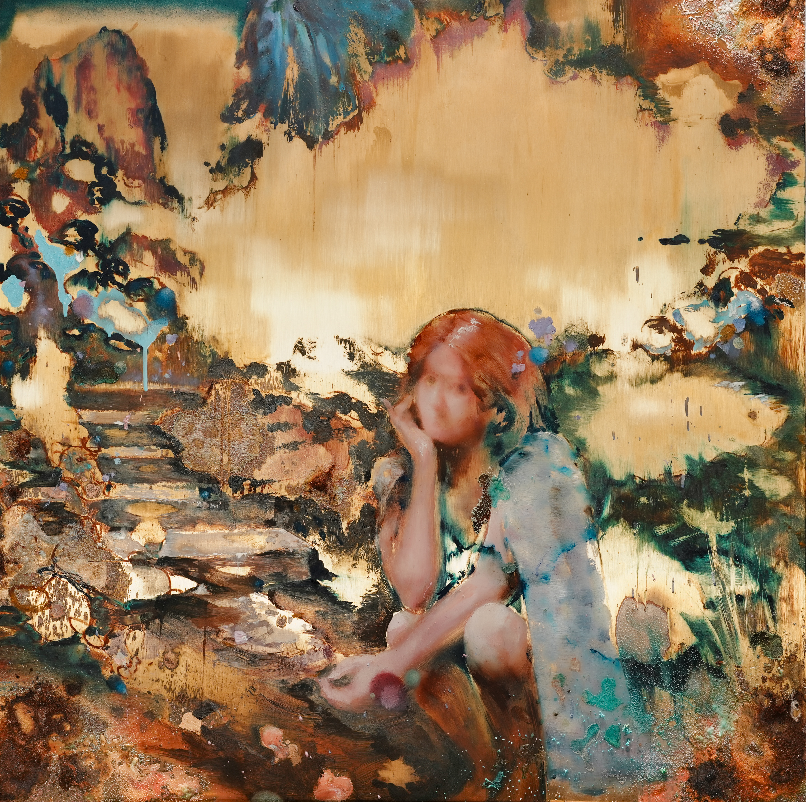

← Acid Drifted—Brass Surface
Home

溪山美哉 / Since You Came
Oil & chemical reaction on brass, 96 × 96 cm, 2026
Selected for IN THE FOREST
Group Exhibition · 20 September–20 October 2026
Chun Art Museum, 2nd Floor, No. 655 Fuzhou Road, Huangpu District, Shanghai